Clinical Phenotype Discovery
k=4, rows=10860, train silhouette=0.136262446641922,
projection=PCA
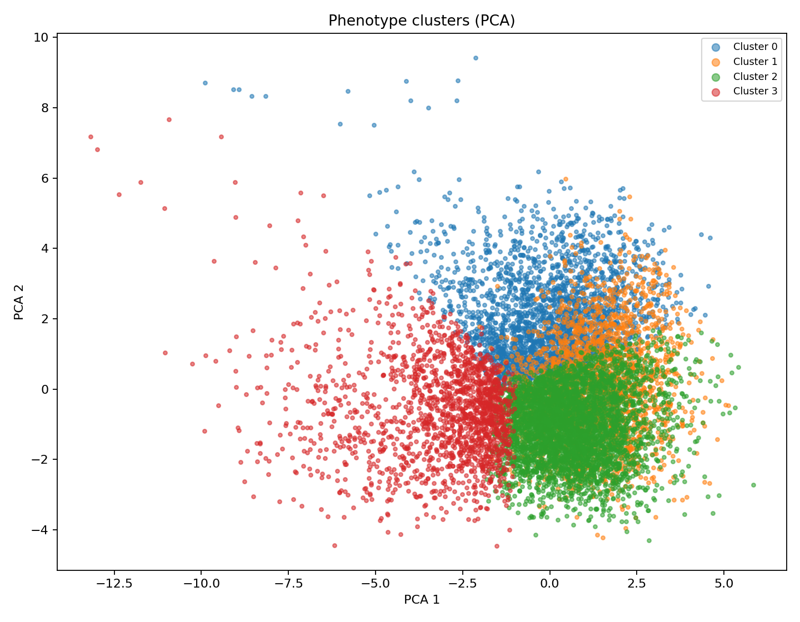
Split Cluster Counts
{
"test": {
"0": 393,
"1": 355,
"2": 615,
"3": 269
},
"train": {
"0": 1792,
"1": 1895,
"2": 2877,
"3": 1279
},
"val": {
"0": 281,
"1": 343,
"2": 543,
"3": 218
}
}
Cluster 0
Train count: 1792
Label dist: {"Sad": 993, "Happy": 799}
High features
- shading_ratio: 1.26z
- stroke_darkness_mean: 1.09z
- stroke_darkness_std: 0.99z
- dark_color_ratio: 0.62z
- figure_integrity_proxy: 0.46z
- warm_ratio: 0.45z
Low features
- component_count_norm: -0.42z
- skeleton_break_count_norm: -0.24z
- top_mass_ratio: -0.18z
- empty_space_ratio: -0.06z
- dominant_orientation_abs: -0.05z
- centroid_x_norm: 0.06z
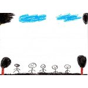
Sad
images_00010745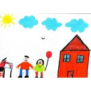
Happy
images_00002923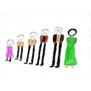
Happy
images_00004728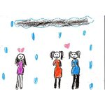
Sad
images_00010336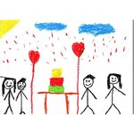
Happy
images_00004779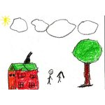
Happy
images_00002235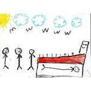
Sad
images_00008194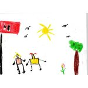
Happy
images_00005946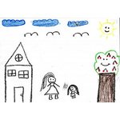
Happy
images_00002457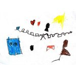
Sad
images_00006353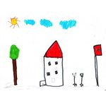
Sad
images_00006413Sad
images_00010156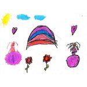
Happy
images_00002078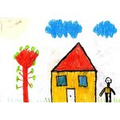
Happy
images_00005924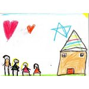
Happy
images_00003577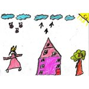
Happy
images_00003263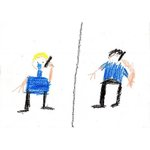
Sad
images_00008319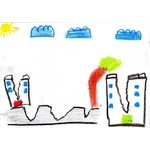
Sad
images_00007146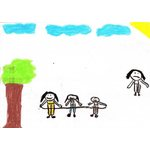
Sad
images_00008612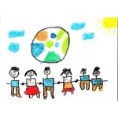
Happy
images_00004478Sad
images_00000884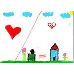
Happy
images_00004815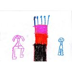
Happy
images_00002349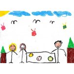
Happy
images_00003933Cluster 1
Train count: 1895
Label dist: {"Sad": 1120, "Happy": 775}
High features
- top_mass_ratio: 0.98z
- empty_space_ratio: 0.67z
- dominant_orientation_abs: 0.55z
- warm_ratio: 0.21z
- figure_integrity_proxy: 0.03z
- centroid_x_norm: -0.13z
Low features
- bottom_mass_ratio: -0.98z
- centroid_y_norm: -0.96z
- fg_area_ratio: -0.67z
- bbox_area_ratio: -0.60z
- skeleton_break_count_norm: -0.59z
- unique_hue_count: -0.57z
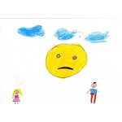
Sad
images_00007814Happy
images_00003584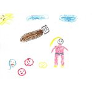
Sad
images_00010525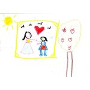
Happy
images_00004234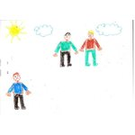
Sad
images_00009624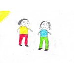
Sad
images_00008630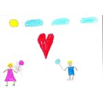
Happy
images_00003096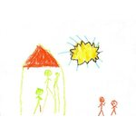
Sad
images_00006252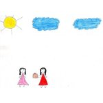
Happy
images_00002387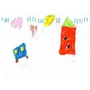
Sad
images_00006338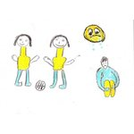
Sad
images_00010478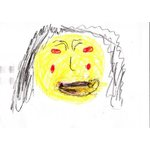
Sad
images_00001142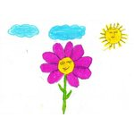
Happy
images_00003980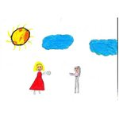
Happy
images_00005663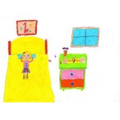
Happy
images_00003965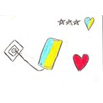
Happy
images_00005864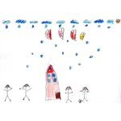
Happy
images_00003164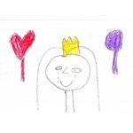
Sad
images_00001207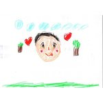
Happy
images_00003490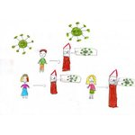
Sad
images_00007517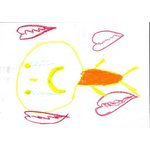
Sad
images_00009628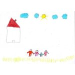
Happy
images_00002623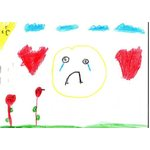
Sad
images_00008107Happy
images_00003357Cluster 2
Train count: 2877
Label dist: {"Happy": 1570, "Sad": 1307}
High features
- centroid_y_norm: 0.69z
- bottom_mass_ratio: 0.69z
- empty_space_ratio: 0.29z
- bbox_area_ratio: 0.16z
- unique_hue_count: 0.10z
- centroid_x_norm: -0.05z
Low features
- top_mass_ratio: -0.69z
- figure_integrity_proxy: -0.54z
- shading_ratio: -0.51z
- stroke_darkness_mean: -0.48z
- stroke_darkness_std: -0.31z
- warm_ratio: -0.29z
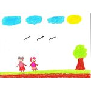
Happy
images_00000486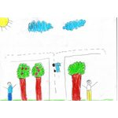
Sad
images_00008506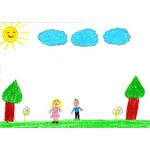
Happy
images_00000596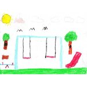
Happy
images_00002894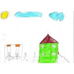
Happy
images_00004531Sad
images_00007464Sad
images_00000997Happy
images_00000764Happy
images_00000642Happy
images_00002491Happy
images_00003626Happy
images_00006078Happy
images_00002318Sad
images_00009248Happy
images_00004970Happy
images_00002669Sad
images_00008574Happy
images_00000458 Happy
Happy
images_00003599Happy
images_00004206Sad
images_00009022Happy
images_00000729Sad
images_00007932Sad
images_00001088Cluster 3
Train count: 1279
Label dist: {"Happy": 777, "Sad": 502}
High features
- skeleton_break_count_norm: 1.67z
- component_count_norm: 1.57z
- fg_area_ratio: 1.55z
- figure_integrity_proxy: 0.53z
- bbox_area_ratio: 0.44z
- top_mass_ratio: 0.35z
Low features
- empty_space_ratio: -1.55z
- dominant_orientation_abs: -0.50z
- stroke_darkness_std: -0.44z
- bottom_mass_ratio: -0.35z
- centroid_y_norm: -0.32z
- warm_ratio: -0.30z
Happy
images_00002513Happy
images_00002661Sad
images_00007308Sad
images_00010200Sad
images_00010023Happy
images_00002455Happy
images_00004165Happy
images_00000024Sad
images_00009020Happy
images_00005409Sad
images_00007061Happy
images_00003401Sad
images_00001512Happy
images_00001770Sad
images_00009057Sad
images_00009245Happy
images_00002741Happy
images_00002339Sad
images_00006806Happy
images_00006236Sad
images_00010768Happy
images_00002836Happy
images_00003346Happy
images_00003976